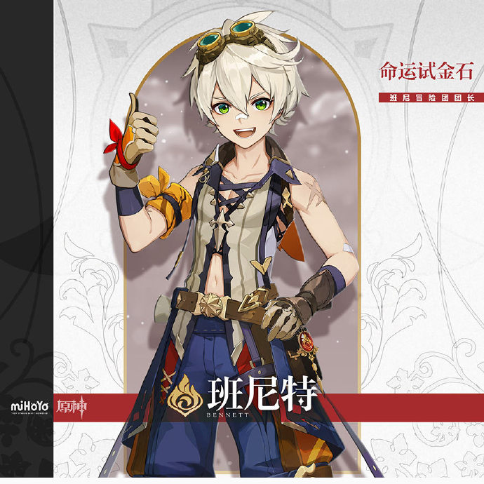

位于提瓦特大陆东北部的自由城邦。
群山和广袤的平原间，自由之风携着蒲公英的气息吹拂过果酒湖，为坐落于湖心岛上的蒙德城送去风神巴巴托斯的祝福与恩泽。
景观特色
果酒湖
环绕蒙德城的天然淡水湖泊。
宽广的湖面和粼粼的波光历经千百年不变，水澈见底，入口清冽甘甜。
正是这样的水源成就了蒙德美酒的盛名，也让果酒湖成为了蒙德的重要标志之一。
千风神殿
地处蒙德东北部的神殿遗址群。
据人们传言，千百年前这里曾是供奉古代风神的神庙，如今被漫长的时光侵蚀，只剩残存的建筑废墟。一些石质立柱上还依稀可辨认出曾经华丽雕刻的精妙曲线。
所纪念的象征早已被遗忘的石雕上雕刻着一句古老的格言，「风带来故事的种子，时间使之发芽。」
位于提瓦特大陆东方的富饶港湾。
傲然矗立的山麓与石林、广袤的平原与生机勃勃的河滩共同构成了璃月的丰富地貌，在四季分明的气候下焕发出多彩的风华。
山石奇景间，又埋藏了多少岩之魔神的古老馈赠等待着人们发掘呢？
景观特色
天衡山
璃月港西边的山脉，也是抵御外敌的一道天然保护屏障。
有记载以来，作为璃月的壁垒经历了数不清的大小战争，因此也可以看到不少古城墙、堡垒和防御工事的遗迹。
传说中璃月人最早的采矿作业亦在此处进行。
荻花洲
荻花洲得名于浅滩中大面积生长的荻花，是璃月北部的一处天然浅滩湿地。
水泽遍布、河网交错纵横，由多样的动植物群落组成了丰富的生态系统，也构成了来往旅客眼中绝佳的景观。
同时，荻花洲也是陆路从蒙德通往璃月的必经要道，因此时常有商队在此歇脚。建在河滩深处的望舒客栈是这里的标志性建筑。
位于提瓦特大陆远东的封闭群岛。
越过无尽的雷暴，踏上红枫与绯樱眷顾的诸岛，在环绕的砂堤、高耸的断崖与幽秘的山林之中，见证御建鸣神主尊大御所大人所追寻的永恒。
景观特色
稻妻城
稻妻最为繁华热闹的城区，稻妻人大多居住生活在此。从花见坂到町街，可顺着地势一路向上，游览当地传统的老店，品尝稻妻特色的美食。
天领奉行府也位于城中，管理民众治安与幕府军备等事务。
在稻妻城至高之处，雷电将军高居天守，凌于众生之上。
无想刃狭间
八酝岛的东部，被一条狭长壮阔的裂谷笔直切断。
此番壮景并非自然天成，而是雷神斩落巨蛇魔神之时造就的奇观，因雷神武艺极致「无想的一刀」命名。
直至今日，巨蛇的遗骨仍存于八酝岛各处，因魔神残骸而起的「祟神」也依旧隐隐而动…
位于提瓦特大陆中西部的学城之都。
同时拥有葱郁雨林与荒芜沙土的奇异国度，无数智慧的果实在这里生长、埋葬。
无论是穿越丛林踏上学城的台阶，还是深入沙漠挖掘赤土的遗迹，远道而来的旅者都可以在此获取宝贵的智识。
降诸魔山
见证诸魔崩毁的山脉。
庞大的机械在山野与绿苔间挤占一席之地，失去光亮后便不再言语。圆形的孔洞似是眼眸，注视历史的变迁。
须弥城
地上一切智慧的渊薮。
在繁枝茂叶的圣树之下，学城的贤者们已遍计所有知识。欢迎来到须弥，寻找答案的旅人。
| 队伍名 | 成员 | |||
|---|---|---|---|---|
| 万达国际 | 枫原万叶 |
达达利亚(公子) |
班尼特  |
香菱 |
| 雷九万班 | 雷电将军 |
九条裟罗 |
枫原万叶 |
班尼特 |